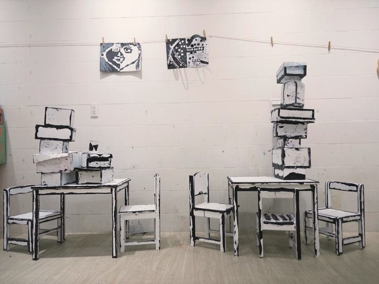
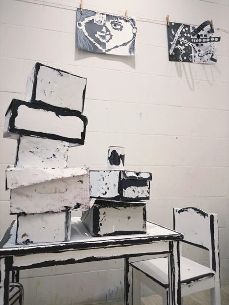

創作技法說明
使用剪紙拼貼、小物件組裝、空盒子場景等素材 , 孩子自行安排物件之間的關係 (誰在上? 誰在中間? 誰靠得比較近?)。從創作中可以讀出孩子心裡的關係網絡、情感投射甚至家庭結構。
10. 空間對話法 ( Spatial Dialogue Framework ) 讓孩子透過「位置」、「距離」、「方向」的安排來表達關係、情感與故事。


使用剪紙拼貼、小物件組裝、空盒子場景等素材 , 孩子自行安排物件之間的關係 (誰在上? 誰在中間? 誰靠得比較近?)。從創作中可以讀出孩子心裡的關係網絡、情感投射甚至家庭結構。
孩子在這個方法中，不只是使用材料或學習技巧，而是在嘗試中建立自己的判斷：我看見了什麼？我想怎麼改變？我可以用什麼方式表達？這些過程會慢慢累積成孩子面對世界的感受力、思考力與創造力。